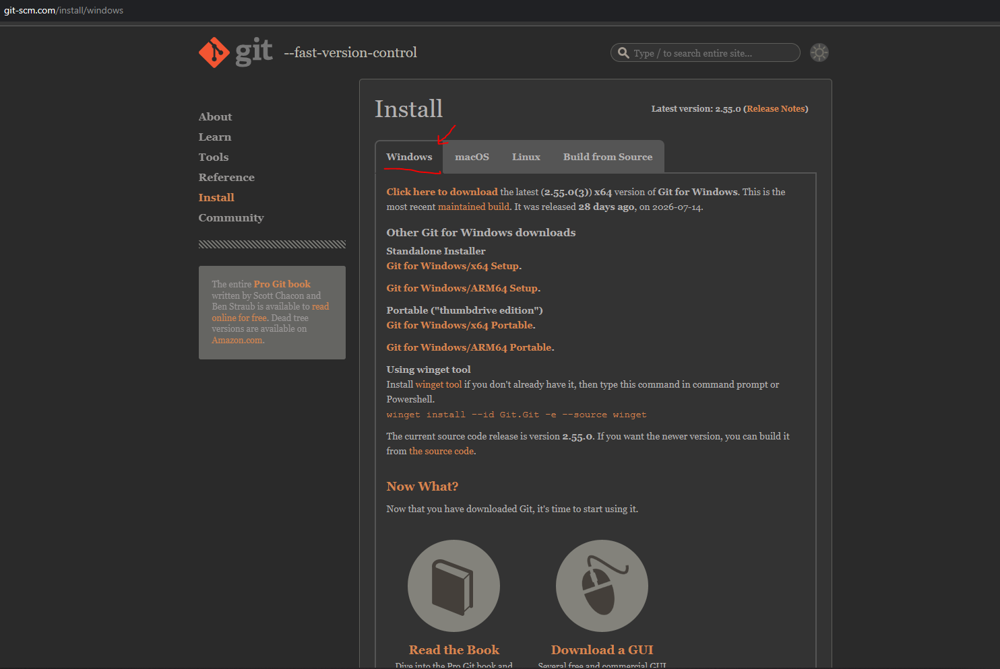
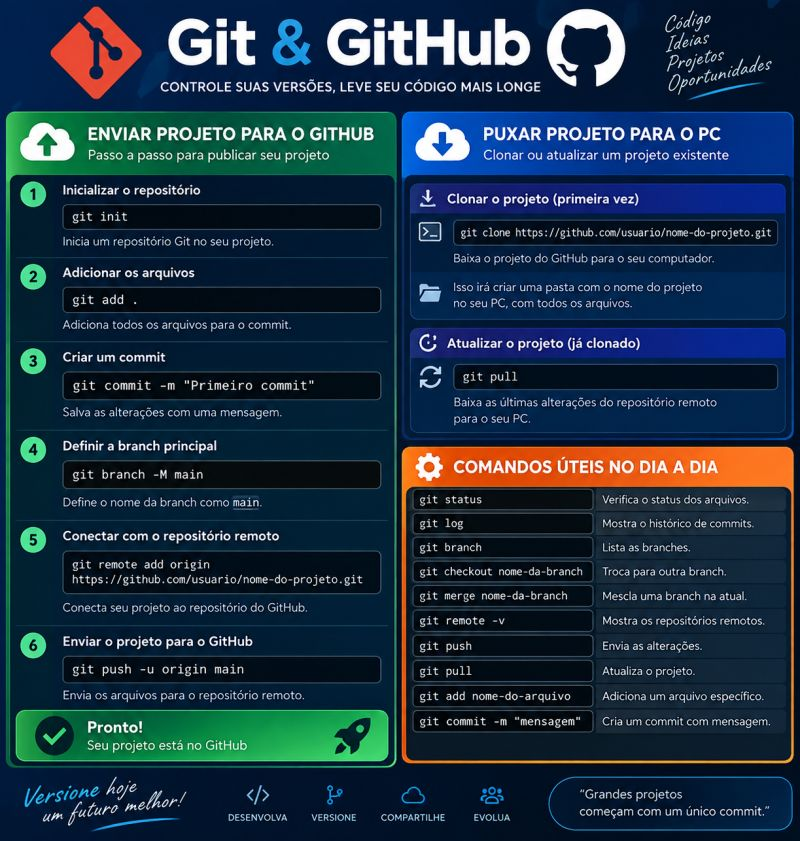

💻 Instalação do Git
Antes de começar a trabalhar com o projeto,
você precisa instalar o Git no seu computador.
💻 Passo 1 — Baixe o Git
Acesse o site oficial do Git e baixe a versão
adequada para o seu computador.
Baixar Git para Windows

👆 Clique na imagem para ampliar
🎥 Vídeo: Como instalar o Git
▶️ Clique no vídeo para assistir. Para assistir em tela cheia,
clique no botão ⛶ do YouTube.
📚 Tutorial: Como instalar o Git
1️⃣ Baixe o Git
Acesse o site oficial e clique na opção de download
para Windows.
2️⃣ Abra o instalador
Depois que o download terminar, abra o arquivo
baixado para iniciar a instalação.
3️⃣ Siga a instalação
Durante a instalação, você pode manter as opções
recomendadas pelo instalador e avançar até concluir.
4️⃣ Verifique se o Git foi instalado
Abra o Git Bash ou o
Prompt de Comando e digite:
git --version
Se aparecer a versão do Git, a instalação foi concluída
corretamente.
5️⃣ Configure seu nome e e-mail
Agora configure seu nome e o e-mail que você utiliza
no Git.
git config --global user.name "Seu Nome"
git config --global user.email "seu@email.com"
Essas informações serão utilizadas nos seus commits.
🐙 GitHub
🚀 Git & GitHub
Git e GitHub são conhecimentos essenciais para quem trabalha
com tecnologia.
No desenvolvimento de projetos, saber utilizar Git vai muito
além de conhecer alguns comandos. É importante entender
versionamento, colaboração, organização do código e controle
das mudanças.

👆 Clique na imagem para ampliar
📌 Alguns comandos que fazem parte da rotina:
git add
Prepara as alterações para o commit.
git commit
Registra as alterações realizadas no projeto.
git push
Envia as alterações para o repositório remoto.
git pull
Atualiza o projeto local com as alterações do repositório remoto.
git clone
Copia um repositório para o computador.
git branch
Permite trabalhar com diferentes branches do projeto.
🎯 Por que aprender Git e GitHub?
Aprender Git e GitHub é essencial para quem trabalha com Desenvolvimento e Tecnologia da Informação, principalmente em projetos realizados em equipe.
Durante o desenvolvimento do INSEP Acessível, utilizamos essas ferramentas para organizar o código, criar e acompanhar branches, colaborar com a equipe, revisar alterações e manter o projeto versionado e organizado.
Mais do que aprender uma ferramenta, o objetivo é desenvolver boas práticas de trabalho em equipe, organização e colaboração, preparando-nos para situações reais do mercado de tecnologia.
🚀 Aprender. Praticar. Colaborar. Versionar. Evoluir.
💻 Visual Studio Code
Conteúdo do tutorial do VS Code...
☕ Java
Conteúdo do tutorial de Java...
🌱 Spring Boot
Conteúdo do tutorial de Spring Boot...
🗄️ Banco de Dados
Conteúdo do tutorial de SQL...